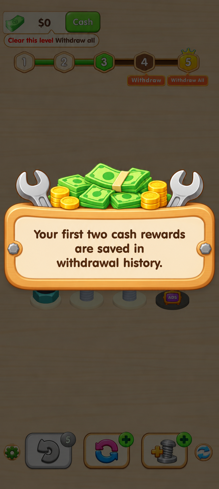
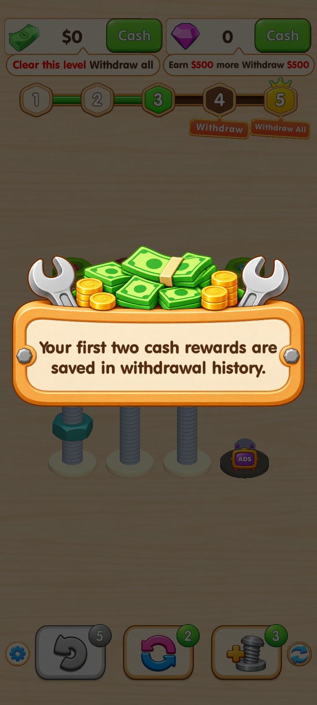
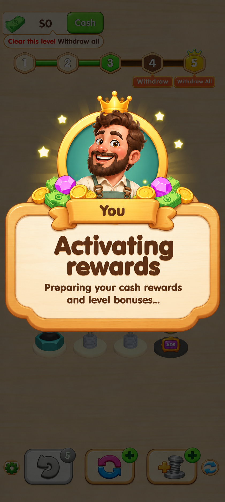
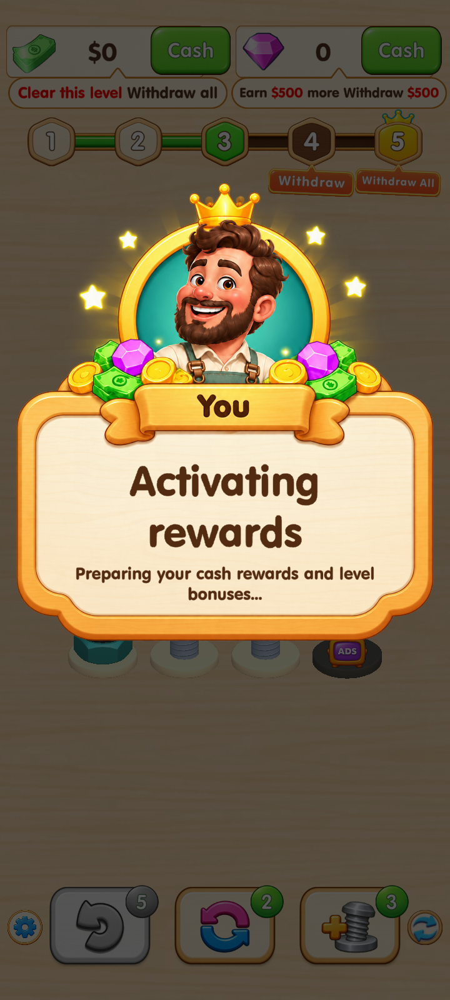
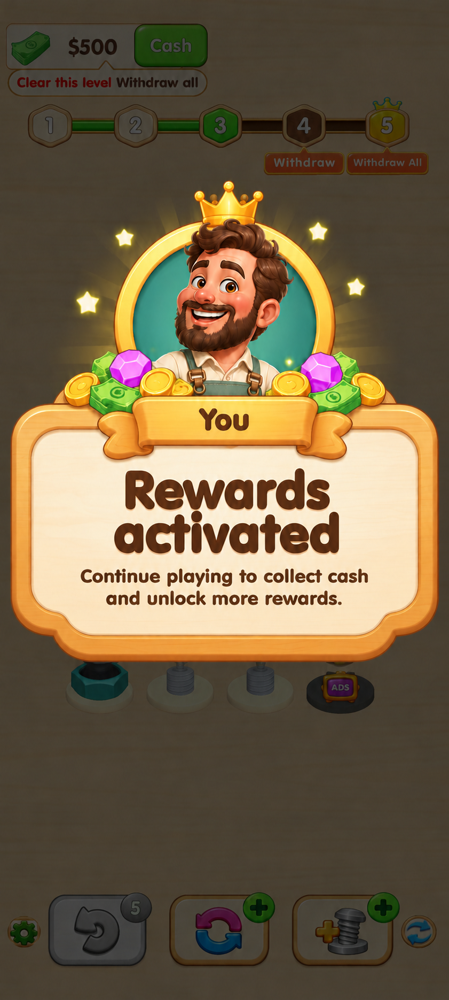
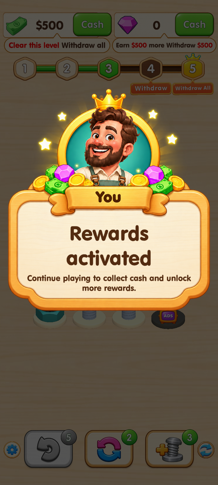
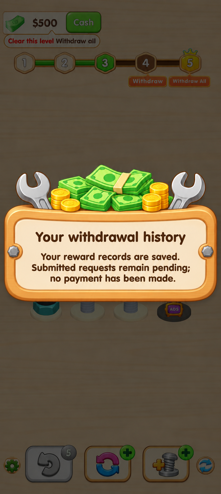
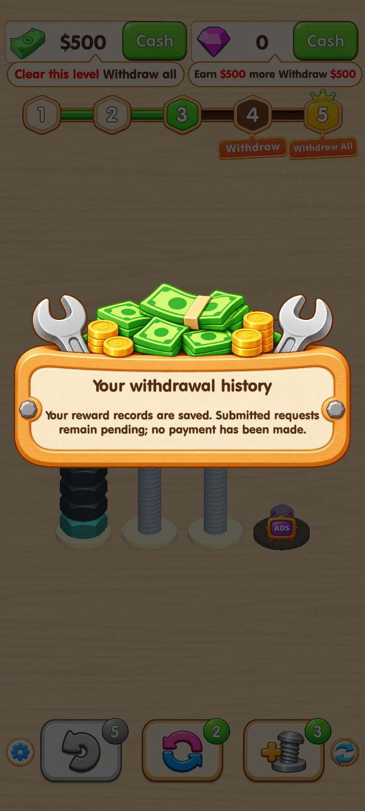

Color Nut Party · 四张提示实装对照
左侧为确认的美术效果图，右侧为 Unity 实际运行截图。文字由游戏实时排版，背景为当前关卡。另提供 运行验收报告 和 美术提取记录（内置 imagegen）。
01 · 奖励记录提示
确认效果图
游戏实装 · 720 × 1600
02 · 激活中
确认效果图
游戏实装 · 720 × 1600
03 · 激活完成
确认效果图
游戏实装 · 720 × 1600
04 · 奖励记录说明
确认效果图
游戏实装 · 720 × 1600